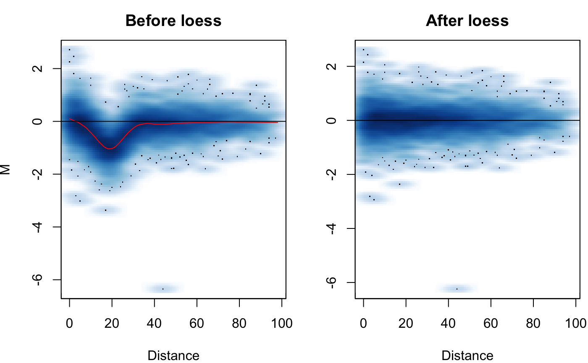
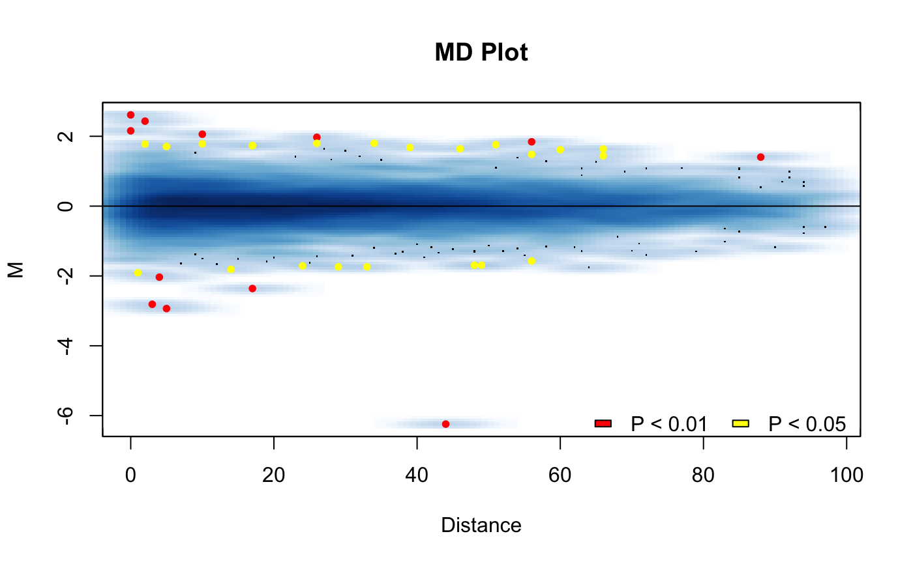
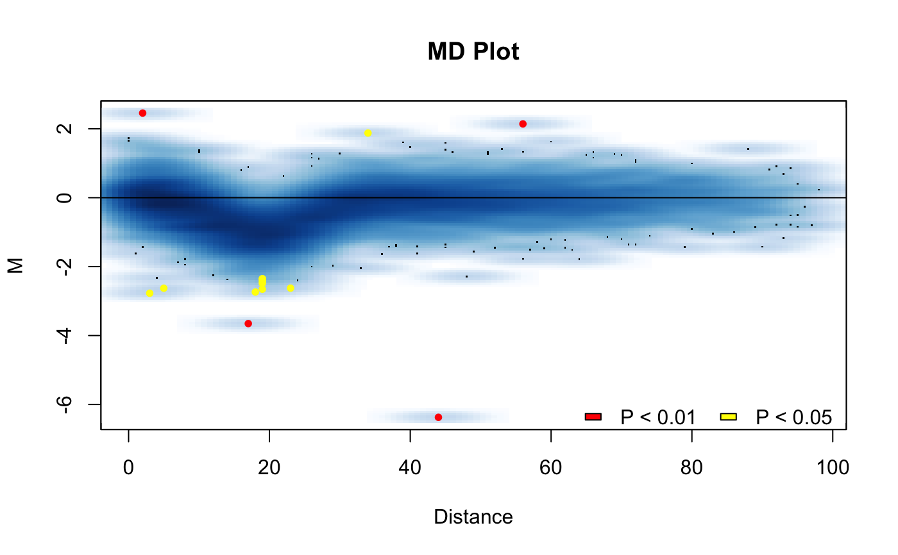

Compare other normalization methods on simulated data
sim.other.methods( sim.table, i.range, j.range, Plot = TRUE, alpha = 0.05, diff.thresh = NA )
| sim.table | the sim.table object output from hic_simulate |
|---|---|
| i.range | The row numbers for the cells that you want to introduce true differences at. Must be same length as j.range. |
| j.range | The column numbers for the cells that you want to introduce true differences at. Must be same length as i.range. |
| Plot | Logical, should the HiCdiff plots be output? Defaults to TRUE. |
| alpha | Type I error rate parameter. At what level should a significant difference be defined. Defaults to 0.05. |
| diff.thresh | Parameter for hic_diff procedure. see ?hic_diff for more details. |
A list containing the true positive rate (TPR), the specificity (SPC), the p-values, the hic.table object, true differences - a data.table of the rows of the hic.table where a true difference was applied, the truth vector - a vector of 0's and 1's where 1 indicates a true difference was applied to that cell.
i.range = sample(1:100, replace=TRUE) j.range = sample(1:100, replace=TRUE) sim <- hic_simulate(i.range = i.range, j.range = j.range, fold.change = 2)#>#>#>#>#>#>#>mat1 <- sim$sim.table[, c('start1', 'start2', 'IF1'), with=FALSE] mat2 <- sim$sim.table[, c('start1', 'start2', 'IF2'), with=FALSE] mat1 <- sparse2full(mat1) %>% KRnorm#>#>colnames(mat1) <- 1:ncol(mat1) colnames(mat2) <-1:ncol(mat2) mat1 <- full2sparse(mat1) mat2 <- full2sparse(mat2) new.tab <- create.hic.table(mat1, mat2, chr= 'chrsim') sim2 <- sim.other.methods(new.tab, i.range = i.range , j.range = j.range)#>#>#>#>